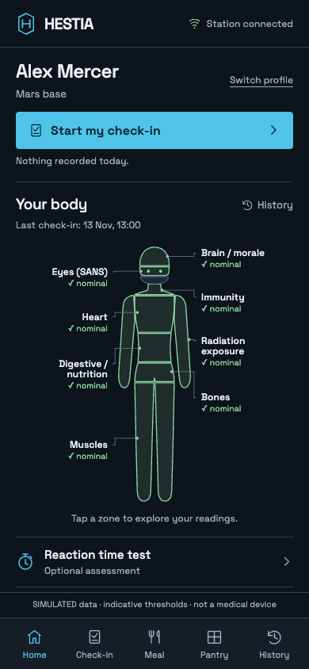
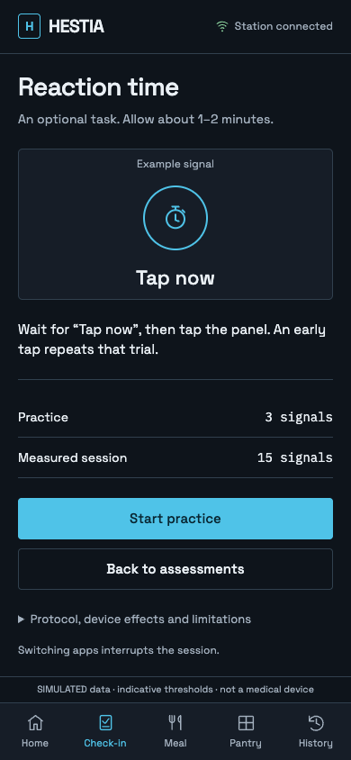
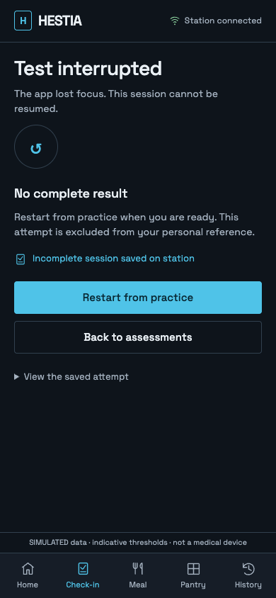

HESTIA — passation visuelle à Fable
14 novembre 2026. Choix retenus : Space Grotesk, bleu nuit et cyan vif d’origine, grande silhouette et huit zones visibles. Les dispositions, icônes et effets de profondeur restent à finaliser.
Aucun changement de code UI dans cette passation. Les boutons des images ne fonctionnent pas. Les captures de téléphone montrent un écran, pas toujours la totalité d’une page qui défile. Cliquer sur une image pour l’ouvrir seule.
Accueil proposé : grande silhouette
Proposition non intégrée

Test de réaction : introduction
Proposition non intégrée

Test interrompu : exemple sauvegardé
Proposition non intégrée

Les profils, réglages, calibration et simulateur restent à harmoniser. Les états rouge, sans données, périmé, en attente de sauvegarde et les erreurs doivent être vérifiés dans l’application après intégration.